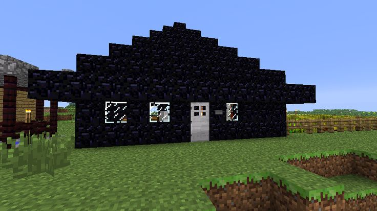

Obsidian Castles
Obsidian castles are nearly indestructible fortresses, built using one of the toughest materials available. Their dark, sleek appearance gives them a menacing and mysterious aesthetic, often used for defensive strongholds or ominous lairs. Due to the material’s resistance to explosions, these castles can withstand even the most powerful attacks, making them ideal for survival situations. While obsidian is difficult to mine and place, the effort results in an impenetrable structure that dominates the landscape.
Nether Portal
Obsidian Nether portals are gateways constructed from obsidian blocks, allowing travel between dimensions when activated with fire. They emit a swirling purple vortex and produce an eerie sound, creating a mystical and ominous atmosphere. Due to obsidian’s durability, these portals are resistant to explosions, making them a reliable means of transportation even in dangerous environments.